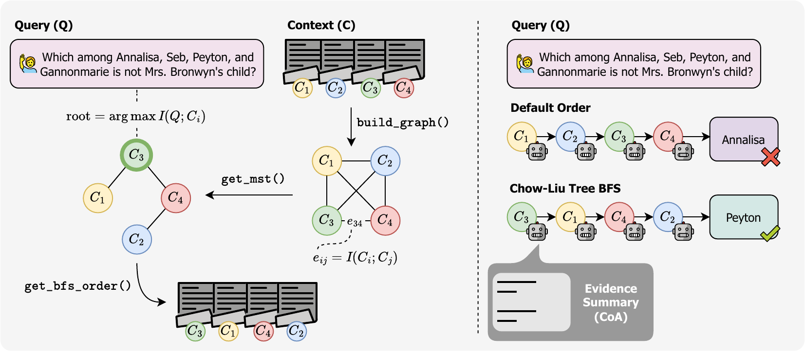
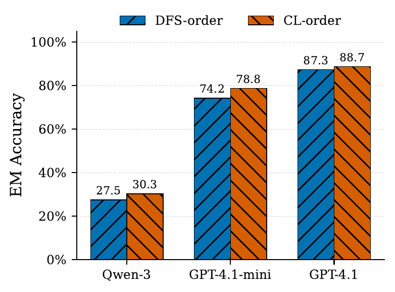

Chow–Liu Ordering for Long-Context Reasoning in Chain-of-Agents
TL;DR. Sequential multi-agent reasoning (Chain-of-Agents) over long contexts is highly sensitive to the order in which chunks are processed. We model inter-chunk dependencies with a Chow–Liu tree over embedding-based pairwise similarities, root it at the chunk most similar to the query, and process chunks in breadth-first order. This dependency-aware ordering consistently beats default document order and dense semantic ordering across LongQA, LongQA-MC, and NarrativeQA, with up to +10.68% relative EM gain.
Method Overview

Figure 1. Overview of Chain-of-Agents (CoA) with chunk order induced by a breadth-first traversal of the Chow–Liu dependency tree (CL–order). First, we build a complete graph on chunks where each edge weight is an embedding-based proxy for mutual information between two chunks. The maximum-spanning tree over this graph yields the Chow–Liu tree, a second-order approximation of the global dependency structure. A breadth-first traversal rooted at the chunk most similar to the query gives the CL–order used by the worker agents.
Why Order Matters in Chain-of-Agents
Large Language Models reason brilliantly within their effective context window, but degrade rapidly when the relevant evidence is spread across hundreds of thousands of tokens. Chain-of-Agents (CoA) is a popular sequential framework for this regime: a long document is split into chunks, and a chain of LLM-based worker agents reads them one at a time, each updating a bounded shared memory $M_k$. A final manager agent reads $M_N$ and produces the answer.
From a probabilistic standpoint, CoA is trying to approximate the ideal posterior
that a model with infinite context could compute directly. CoA replaces this with a latent-state factorization in which only a compressed summary is passed between agents. Because each memory update operates under a fixed token budget, ingesting a new chunk forces the worker to discard or compress earlier evidence. The final state $M_N$, and therefore the answer, depends on the order $\pi$ in which chunks are processed:
In the idealized expressive limit, all orderings would be equivalent. In practice, real LLMs have finite capacity, so the discrepancy
is strictly positive and depends on how well $\pi$ respects the latent dependencies among chunks. Despite this, existing CoA pipelines typically use the default document order, or rank chunks by dense similarity to the query — neither of which models pairwise relationships between chunks.
Chow–Liu Trees as an Ideal Structural Surrogate
We treat the answer $Y$ and the chunks $X_1, \dots, X_N$ as random variables conditional on the query $q$. The joint distribution $P(Y, X_{1:N} \mid q)$ captures both (i) which chunks contain answer-relevant evidence, and (ii) which chunks are jointly required (multi-hop reasoning, corroborating details, related entities).
Directly modeling this joint is intractable. Following the classical Chow–Liu construction, we approximate it with a tree-structured graphical model rooted at the answer node:
The Chow–Liu tree $T^\star$ is the maximum-likelihood tree over this family, which is equivalently the maximum-weight spanning tree on pairwise mutual information:
A linearization of this tree (e.g., breadth-first from the answer node) yields an ordering that (i) places chunks most informative about $Y$ early, and (ii) keeps mutually dependent chunks adjacent, exposing jointly relevant evidence to CoA before compression irrevocably discards it. This is exactly the bias CoA needs.
An Unsupervised, Embedding-Based Surrogate
Estimating mutual information from data is unrealistic in the long-context regime — labeled $(q, x_{1:N}, y)$ triples are scarce. Motivated by contrastive MI bounds, we instead use a sentence encoder $\phi(\cdot)$ and treat cosine similarity
as a surrogate indicator of dependency strength. The embedding-based Chow–Liu tree is the maximum-weight spanning tree over $\{s_{ij}\}$.
At inference time the answer $Y$ is unobserved, so we cannot root the tree at it. The observable signal most correlated with $Y$ is the query, so we choose as root the chunk whose embedding is most similar to the query embedding:
A BFS from $r(q)$ produces the CL–order $\pi_{T^{\mathrm{sim}}, q}$ used by the workers.
The CL–CoA algorithm
- for $i = 1, \dots, N$ do $e_i \leftarrow \phi(x_i)$ # embed each chunk
- for all $i < j$ do $s_{ij} \leftarrow \cos(e_i, e_j)$ # pairwise dependency proxy
- $T^{\mathrm{sim}} \leftarrow \mathrm{MaxSpanningTree}\bigl(\{s_{ij}\}\bigr)$ # embedding-based Chow–Liu tree
- $e_q \leftarrow \phi(q)$; $r \leftarrow \arg\max_i \cos(e_q, e_i)$ # query-conditioned root
- $\pi \leftarrow \mathrm{BFS}(T^{\mathrm{sim}},\, r)$ # breadth-first processing order
- $M_0 \leftarrow \varnothing$ # initialize shared memory
- for $k = 1, \dots, N$ do
- $j \leftarrow \pi(k)$
- $M_k \leftarrow \mathrm{Worker}\bigl(q,\, x_j,\, M_{k-1}\bigr)$ # compress new evidence into memory
- $\hat{y} \leftarrow \mathrm{Manager}(q,\, M_N)$
- return $\hat{y}$
Lines 1–5 build the embedding-based Chow–Liu tree and turn it into a query-conditioned BFS ordering. Lines 6–9 are the standard Chain-of-Agents inner loop — we change only the order in which chunks are fed to the workers.
Results
We evaluate on three long-context benchmarks from HELMET: LongQA and LongQA-MC from $\infty$-Bench, and NarrativeQA restricted to queries with context length over 256K tokens. For free-form answers we report Ragas answer relevance; for multiple choice we report exact-match (EM) accuracy. Chunks are 8K tokens with an 8K-token memory budget per agent. Embeddings are Text-Embedding-3-Large.
| Model | LongQA (Ragas ↑) | LongQA-MC (EM ↑) | NarrativeQA (Ragas ↑) | ||||||
|---|---|---|---|---|---|---|---|---|---|
| Default | Dense | CL–order | Default | Dense | CL–order | Default | Dense | CL–order | |
| Qwen-3-14B | 41.43 | 42.25 | 44.12 | 24.89 | 26.20 | 30.26 | 35.72 | 38.26 | 41.23 |
| GPT-4.1-mini | 51.94 | 47.96 | 54.35 | 65.22 | 67.39 | 70.29 | 50.16 | 50.81 | 52.39 |
| GPT-4.1 | 59.03 | 58.56 | 60.68 | 82.84 | 84.33 | 85.07 | 57.30 | 55.93 | 58.08 |
Table 1. Performance on long-context benchmarks with the GPT-4.1 series and Qwen-3. CL–order consistently outperforms both Default document order and the Dense semantic-score baseline across all three models and all three datasets.
Across the board, CL–order wins on every (model, benchmark) pair. The aggregate gains over the strongest baseline are +10.68% relative EM on LongQA-MC versus default order, and +6.89% relative EM versus dense semantic ranking. On Ragas-based answer relevance the corresponding relative gains are +5.86% and +6.01%. Notably, the dense semantic baseline is inconsistent — for GPT-4.1 and GPT-4.1-mini on LongQA, it actually hurts performance relative to the default document order, confirming that purely local query similarity is the wrong objective when chunks must compose under a memory bottleneck.
Ablation: BFS on Chow–Liu vs. greedy DFS

Figure 2. Greedy DFS over the complete chunk graph vs. BFS over the Chow–Liu tree (CL–order), on LongQA-MC. CL–order wins across all three models. DFS chains chunks by purely local similarity; one step toward a high-similarity but contextually irrelevant neighbor is enough to derail the traversal. The Chow–Liu MST instead commits to globally optimal pairwise dependencies before any traversal happens.
Ablation: scoring function and embeddings
We also swap Text-Embedding-3-Large for two alternatives. With the open-weight Qwen-3-Embedding-8B, CL–order again wins consistently, with the largest gains on the smaller models. With sparse BM25 the gains shrink and are less consistent: BM25 measures lexical overlap rather than semantic dependency, and is only a coarse proxy for mutual information.
Takeaways
- Order is structure, not preprocessing. Under a memory bottleneck, chunk ordering is a structured-inference choice that materially changes what the final memory state can represent.
- Pairwise dependencies matter more than per-chunk relevance. Ranking chunks by query similarity (the Dense baseline) doesn't preserve composability, and can actively hurt.
- Chow–Liu trees are a great fit. They give the maximum-likelihood tree approximation to the latent dependency structure, are cheap to compute from embeddings, and require no training data.
- Global > local. Building the MST first and traversing second beats greedy local chaining (DFS) on every model we tested.
- Smaller models benefit most. Gains are most pronounced for GPT-4.1-mini and Qwen-3-14B — smaller workers are more sensitive to noisy context, and CL–order gives them cleaner trajectories.